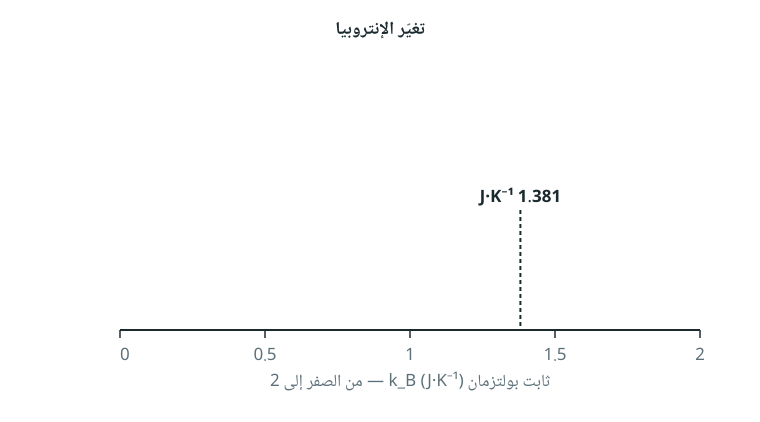

تغيّر الإنتروبيا
Entropy change
تغيّر الإنتروبيا يقيس كمية الحرارة المتبادلة مقسومة على درجة الحرارة المطلقة التي تُتبادل عندها، وهو مقياس لعدد الترتيبات المجهرية المتاحة للنظام، ولا ينقص في نظام معزول.
الإنتروبيا S دالة حالة، وتغيّرها في عملية عكوسة عند درجة حرارة T هو ΔS = Q_rev/T، بوحدة J/K. وعلى المستوى المجهري، ترتبط الإنتروبيا بعدد الترتيبات المجهرية المتاحة للنظام عبر علاقة بولتزمان S = k_B·ln Ω. القانون الثاني للديناميكا الحرارية يقول إن إنتروبيا نظام معزول لا تنقص أبداً: ΔS_total ≥ 0، وتصير صفراً فقط في عملية عكوسة. مثال: صهر 1.000 kg من الجليد عند 273.15 K يحتاج حرارة كامنة 333.55 kJ/kg، فـΔS = 333 550/273.15 = 1 221 J/K. وهذا موجب لأن الماء السائل أكثر ترتيباً عشوائية من الجليد.
كيف تعمل الظاهرة؟
الإنتروبيا تنشأ من أن النظام لا يشغل حالة مجهرية واحدة بل مجموعة هائلة من الحالات المتاحة بالطاقة نفسها. وكل حالة مجهرية متساوية الاحتمال، فالنظام يقضي معظم وقته في المجموعة الأكبر من الحالات، وهي المجموعة الأكثر عشوائية. فحين تنتشر الحرارة من جسم ساخن إلى بارد، لا ينتقل شيء مادياً، بل تنتقل الطاقة إلى توزيع أكثر احتمالاً. وهذا هو جوهر القانون الثاني: ليس منعاً مطلقاً للترتيب، بل ترجيح إحصائي ساحق للتوزيع الأكثر احتمالاً. ولهذا لا يُرى انتهاك القانون في أنظمة كبيرة، مع أن الجزيئات المفردة تتحرك في الاتجاهين بالتساوي.
العلاقة بالأرقام
ΔS = Q_rev/T للعملية العكوسة، وΔS = n·C_p·ln(T₂/T₁) للتدفئة عند ثبات الضغط، وΔS = n·R·ln(V₂/V₁) للتمدد الأيزوثرمي للغاز المثالي. وS = k_B·ln Ω. مثال عددي: صهر 1 kg جليد → ΔS = 333 550/273.15 = 1 221 J/K. وتبخير 1 kg ماء عند 373.15 K بحرارة كامنة 2 257 kJ/kg → ΔS = 2 257 000/373.15 = 6 049 J/K، أي خمسة أضعاف إنتروبيا الصهر تقريباً، لأن البخار أكثر حرية بكثير من السائل.
مفاهيم متقاربة
يُفرَّق بين الإنتروبيا والطاقة الحرة: الإنتروبيا جزء من طاقة غيبس، لكنها وحدها لا تحدد التلقائية عند ثبات الحرارة والضغط. ويُفرَّق بين ΔS للنظام وΔS للكون: الأولى قد تكون سالبة في عمليات تلقائية، والثانية لا تكون سالبة أبداً. ويُفرَّق بين الإنتروبيا والحرارة الكامنة: الحرارة الكامنة طاقة (J)، والإنتروبيا طاقة مقسومة على حرارة (J/K). ويُفرَّق بين إنتروبيا بولتزمان الإحصائية وإنتروبيا كلاوزيوس الظواهرية: الاثنتان متطابقتان عددياً، لكن الأولى تفسّر الأصل المجهري والثانية تعرّف الكمية تشغيلياً.
حدود التطبيق
التعريف ΔS = Q_rev/T يفترض عملية عكوسة، ولا يُستعمل مباشرة لعملية غير عكوسة؛ تُستعمل بدلاً منه مسار عكوس مكافئ بين الحالتين نفسيهما. وعلاقة بولتزمان تفترض أن الحالات المجهرية متساوية الاحتمال، وهذا لا يصح في أنظمة ذات تفاعلات طويلة المدى أو في الأنظمة الكمومية المتشابكة. ولا تُعرَّف الإنتروبيا تعريفاً كاملاً للأنظمة غير المتوازنة. وأخيراً القانون الثاني صالح للأنظمة الكبيرة، أما في الأنظمة النانوية فتظهر تذبذبات إنتروبية ملموسة وتُستعمل علاقات تذبذب-تبديد بدل الحكم المطلق.

| الكمية | القيمة | المصدر |
|---|---|---|
| تغيّر إنتروبيا صهر 1 kg جليد عند 273.15 K | +1 221 J/K | [2] |
| تغيّر إنتروبيا الكون لصهر غير عكوس عند 293.15 K | +83 J/K | [1] |
المصادر
- 1 CODATA Value: Boltzmann constant — NIST — CODATA 2022 recommended values (2024). physics.nist.gov/cgi-bin/cuu/Value?k · اطُّلع عليه 2026-11-21
- 2 NISTIR 5078 — Thermodynamic Properties of Water, 0 to 374 C and Pressures to 100 MPa (IAPWS-95 tabulation) — NIST — National Institute of Standards and Technology (1998). www.nist.gov/publications/thermodynamic-properties-water-temperatures-0-374-c-and-pressures-100-mpa · اطُّلع عليه 2026-11-21
- 3 The International System of Units (SI), 9th edition (2019) — BIPM — Bureau International des Poids et Mesures (2019). www.bipm.org/en/publications/si-brochure · اطُّلع عليه 2026-11-21
استشهد بهذا المصطلح
الصيغتان مبنيتان من بيانات الصفحة نفسها: العنوان والتاريخ ورابط النسخة المنشورة.
تغيّر الإنتروبيا — Entropy change. (2026). ديوان المعرفة — انفراد. https://infiradev.com/diwan/terms/term-entropy-change.html
@misc{term-entropy-change2026,
title = {تغيّر الإنتروبيا},
titleaddon = {Entropy change},
howpublished = {{ديوان المعرفة — انفراد} — مرجع علمي عربي},
year = {2026},
url = {https://infiradev.com/diwan/terms/term-entropy-change.html},
urldate = {2026-11-26},
note = {مراجعة علمية: hermes (مراجعة معتمدة 2026-11-26)}
}
راجعه: hermes (مراجعة معتمدة 2026-11-26) · 2026-11-26 · آخر تحديث 2026-11-21